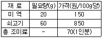
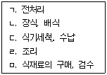

한식조리기능사 (2007-04-01 기출문제)
1과목: 식품위생 및 법규
1. 식품공전에 규정되어 있는 표준온도는?
- 10℃
- 15℃
- 20℃
- 25℃
(정답률: 63%)

2. 식품위생법령상 영업신고 대상 업종이 아닌 것은?
- 위탁급식영업
- 식품냉동, 냉장업
- 즉석 판매제조, 가공업
- 양곡가공업 중 도정업
(정답률: 76%)
3. 식품위생법령상 주류를 판매할 수 없는 업종은?
- 휴게음식점영업
- 일반음식점영업
- 유흥주점영업
- 단란주점영업
(정답률: 94%)
4. 식품위주법규상 판매 등이 금지되고 가축 전체를 이용하지 못하는 질병은?
- 선모충증
- 회충증
- 폐기종
- 방선균증
(정답률: 55%)
5. 다음 중 식품위생법에서 다루고 있는 내용은?
- 먹는물 수질관리
- 전염병예방시설의 설치
- 식육의 원산지 표시
- 공중위생감시원의 자격
(정답률: 54%)
6. 황색포도상구균 식중독의 일반적인 특성으로 옳은 것은?
- 설사변이 혈변의 형태이다.
- 급성위장염 증세가 나타난다.
- 잠복기가 길다.
- 치사율이 높은 편이다.
(정답률: 66%)
7. 다음 미생물 중 곰팡이가 아닌 것은?
- 아스퍼질러스(Aspergillus) 속
- 페니실러움(Penicillium) 속
- 클로스트리디움(Clostridium) 속
- 리조푸스(Rhizopus) 속
(정답률: 67%)
8. 다음 중 건조식품, 곡류 등에 가장 잘 번식하는 미생물은?
- 효모
- 세균
- 곰팡이
- 바이러스
(정답률: 84%)
9. 세균성 식중독의 전염 예방 대책이 아닌 것은?
- 원인균의 식품오염을 방지한다.
- 위염환자의 식품조리를 금한다.
- 냉장, 냉동 보관하여 오염균의 발육, 증식을 방지한다.
- 세균성 식중독에 관한 보건 교육을 철저히 실시한다.
(정답률: 75%)
10. 식물과 그 유독성분이 잘못 연결된 것은?
- 감자 - 솔라닌
- 청매 - 프시로신(psilocine)
- 피마자 - 리신
- 독미나리 - 시큐톡신
(정답률: 83%)
11. 식품의 부패 정도를 알아보는 시험 방법이 아닌 것은?
- 유산균수 검사
- 관능 검사
- 생균수 검사
- 산도 검사
(정답률: 59%)
12. 식품첨가물에 대한 설명으로 틀린 것은?
- 보존료는 식품의 미생물에 의한 부패를 방지할 목적으로 사용된다.
- 규소수지는 주로 산화방지제로 사용된다.
- 산화형 표백제로서 식품에 사용이 허가된 것은 과산화벤조일이다.
- 과황산암모늄은 소맥분 이외의 식품에 사용하여서는 안 된다.
(정답률: 54%)
13. 복어독에 관한 설명으로 잘못된 것은?
- 복어독은 햇볕에 약하다.
- 난소, 간, 내장 등에 독이 많다.
- 복어독은 테트로도톡신이다.
- 복어독에 중독되었을 때에는 신속하게 위장 내의 독소를 제거하여야 한다.
(정답률: 89%)
14. 다음 중 화학성 식중독의 원인이 아닌 것은?
- 설사성 패류 중독
- 환경오염에 기인하는 식품 유독성분 중독
- 중금속에 의한 중독
- 유해성 식품첨가물에 의한 중독
(정답률: 63%)
15. 식품이 세균에 오염되는 것을 막기 위한 방법으로 바람직하지 않은 것은?
- 식품취급 장소의 위생동물관리
- 식품취급자의 마스크 착용
- 식품취급자의 손을 역성비누로 소독
- 식품의 철제 용기를 석탄산으로 소독
(정답률: 55%)
2과목: 식품학
16. 새우나 게 등의 갑각류에 함유되어 있으며 사후 가열되면 적색을 띠는 색소는?
- 안토시아닌(anthocyanin)
- 아스타산틴(astaxanthin)
- 클로로필(chlorophyll)
- 멜라닌(melanine)
(정답률: 60%)
17. 동물에서 추출되는 천연 검질 물질로만 짝지어진 것은?
- 팩틴 구아검
- 한천, 알긴산 염
- 젤라틴, 키틴
- 가티검, 전분
(정답률: 80%)
18. 아밀로펙틴에 대한 설명으로 틀린 것은?
- 찹쌀은 아밀로펙틴으로만 구성되어 있다.
- 기본단위는 포도당이다.
- a-1,4결합과 a-1,6 결합으로 되어 있다.
- 요오드와 반응하면 갈색을 띤다.
(정답률: 50%)
19. 식품의 산성 및 알칼리성을 결정하는 기준 성분은?
- 중성지방(triglyceride)
- 유리지방산(free fatty acid)
- 하이드로과산화물(hydroperoxide)
- 알코올(alcohol)
(정답률: 44%)
20. 육류의 사후경직 후 숙성 과정에서 나타나는 현상이 아닌 것은?
- 근육의 경직상태 해제
- 효소에 의한 단백질 분해
- 아미노태질소 증가
- 액토미오신의 합성
(정답률: 30%)
21. 전통적인 식혜 제조방법에서 엿기름에 대한 설명이 잘못된 것은?
- 엿기름의 효소는 수용성이므로 물에 담그면 용출된다.
- 엿기름을 가루로 만들면 효소가 더 쉽게 용출된다.
- 엿기름 가루를 물에 담가 두면서 주물러 주면 효소가 더 빠르게 용출된다.
- 식혜 제조에 사용되는 엿기름의 농도가 낮을수록 당화 속도가 빨라진다.
(정답률: 77%)
22. 단백질의 특성에 대한 설명으로 틀린 것은?
- C, H, O, N, S, P 등의 원소로 이루어져 있다.
- 단백질은 뷰렛에 의한 정색반응을 나타내지 않는다.
- 조단백질은 일반적으로 질소의 양에 6.25를 곱한 값이다.
- 아미노산은 분자 중에 아미노기와 카르복실기를 갖는다.
(정답률: 50%)
23. 박력분에 대한 설명으로 맞는 것은?
- 경질의 밀로 만든다.
- 다목적으로 사용된다.
- 탄력성과 점성이 약하다.
- 마카로니, 식빵 제조에 알맞다.
(정답률: 64%)
24. 다음 중 식품의 일반성분이 아닌 것은?
- 수분
- 효소
- 탄수화물
- 무기질
(정답률: 71%)
25. 식품의 신맛에 대한 설명으로 옳은 것은?
- 신맛은 식욕을 증진시켜 주는 작용을 한다.
- 식품의 신맛의 정도는 수소이온농도와 반비례한다.
- 동일한 pH에서 무기산이 유기산보다 신맛이 더 강하다.
- 포도, 사과의 상쾌한 신맛 성분은 호박산(succinic acid)과 이노신산(inosinic acid)이다.
(정답률: 63%)
26. 다음 중 레토르트식품의 가공과 관계가 없는 것은?
- 통조림
- 파우치
- 플라스틱 필름
- 고압솥
(정답률: 46%)
27. 다음 유지 중 건성유는?
- 참기름
- 면실유
- 아마인유
- 올리브유
(정답률: 48%)
28. 생선 육질이 쇠고기 육질보다 연한 것은 주로 어떤 성분의 차이에 의한 것인가?
- 미오신(myosin)
- 헤모글로빈(hemoglobin)
- 포도당(glucose)
- 콜라겐(Collagen)
(정답률: 55%)
29. 마이야르(Maillard) 반응에 대한 설명으로 틀린 것은?
- 식품은 갈색화가 되고 독특한 풍미가 형성된다.
- 효소에 의해 일어난다.
- 당류와 아미노산이 함게 공존할 때 일어난다.
- 멜라노이딘 색소가 형성된다.
(정답률: 51%)
30. 다음 중 비타민 D2의 전구물질로 프로비타민 D로 불리는 것은?
- 프로게스테론(progesterone)
- 에르고스테롤(ergosterol)
- 시토스테롤(sitosterol)
- 스티그마스테롤(stigmasterol)
(정답률: 61%)
3과목: 조리이론과 원가계산
31. 튀김옷에 대한 설명 중 잘못된 것은?
- 중력분에 10~30%의 전분을 혼합하면 박력분과 비슷한 효과를 얻을 수 있다.
- 계란을 넣으면 글루텐 형성을 돕고 수분 방출을 막아 주므로 장시간 두고 먹을 수 있다.
- 튀김옷에 0.2% 정도의 중조를 혼입하면 오랫동안 바삭한 상태를 유지할 수 있다.
- 튀김옷을 반죽할 때 적게 저으면 글루텐 형성을 방지할 수 있다.
(정답률: 51%)
32. 전자레인지를 이용한 조리에 대한 설명으로 틀린 것은?
- 음식의 크기와 개수에 따라 조리시간이 결정된다.
- 조리시간이 짧아 갈변현상이 거의 일어나지 않는다.
- 법랑제, 금속제 용기 등을 사용할 수 있다.
- 열전달이 신속하므로 조리시간이 단축된다.
(정답률: 79%)
33. 다음 중 버터의 특성이 아닌 것은?
- 독특한 맛과 향기를 가져 음식에 풍미를 준다.
- 냄새를 빨리 흡수하므로 밀폐하여 저장하여야 한다.
- 포화지방산과 불포화지방산을 모두 함유하고 있다.
- 성분은 단백질이 80% 이상이다.
(정답률: 78%)
34. 식품의 냉동에 대한 설명으로 틀린 것은?
- 육류나 생선은 원형 그대로 혹은 부분으로 나누어 냉동한다.
- 채소류는 블렌칭(blanching)한 후 냉동한다.
- 식품을 냉동 보관하면 영양적인 손실이 적다.
- -10℃ 이하에서 보존하면 장기간 보존해도 위생상 안전하다.
(정답률: 69%)
35. 식초의 기능에 대한 설명으로 틀린 것은?
- 생선에 사용하면 생선살이 단단해진다.
- 붉은 비츠(beets)에 사용하면 선명한 적색이 된다.
- 양파에 사용하면 황색이 된다.
- 마요네즈 만들 때 사용하면 유화액을 안정시켜 준다.
(정답률: 59%)
36. 신선한 생선의 특징이 아닌 것은?
- 눈알이 밖으로 돌출된 것
- 아가미의 빛깔이 선홍색인 것
- 비늘이 잘 떨어지며 광택이 있는 것
- 손가락으로 눌렀을 때 탄력성이 있는 것
(정답률: 75%)
37. 단체급식에 대한 설명으로 틀린 것은?
- 싼값에 제공되는 식사이므로 영양적 요구는 충족시키기 어렵다.
- 식비의 경비 절감은 대체식품 등으로 가능하다.
- 피급식자에게 식(食)에 대한 인식을 고양하고 영양지도를 한다.
- 급식을 통해 연대감이나 정신적 안정을 갖는다.
(정답률: 79%)
38. 푸른 색 채소의 색과 질감을 고려할 때 데치기의 가장 좋은 방법은?
- 식소다를 넣어 오랫동안 데친 후 얼음물에 식힌다.
- 공기와의 접촉으로 산회되어 색이 변하는 것을 막기 위해 뚜껑을 닫고 데친다.
- 물을 적게 하여 데치는 시간을 단축시킨 후 얼음물에 식힌다.
- 많은 양의 물에 소금을 약간 넣고 데친 후 얼음물에 식힌다.
(정답률: 75%)
39. 다음, 당류 중 단맛이 가장 강한 것은?
- 맥아당
- 포도당
- 과당
- 유당
(정답률: 86%)
40. 한국인 영양섭취기준(KDRIs)의 구성요소가 아닌 것은?
- 평균필요량
- 권장섭취량
- 하한섭취량
- 충분섭취량
(정답률: 78%)
41. 식단의 형태 중 자유선택식단(카페테리아 식단)의 특징이 아닌 것은?
- 피급식자가 기호에 따라 음식을 선택한다.
- 적온급식설비와 개별식기의 사용은 필요하지 않다.
- 셀프서비스가 전제되어야 한다.
- 조리 생산성은 고정 메뉴식보다 낮다.
(정답률: 66%)
42. 고등어 150g을 돼지고기로 대체하려고 한다. 고등어의 단백질 함량을 고려했을 때 돼지고기는 약 몇g 필요한가? (단, 고등어 100g당 단백질 함량:20.2g, 지질:10.4g, 돼지고기100g당 단백질 함량:18.5g, 지질:13.9g)
- 137g
- 152g
- 164g
- 178g
(정답률: 49%)
43. 다음 중 두부의 응고제가 아닌 것은?
- 염화마그네슘(MgCl2)
- 황산칼슘(CaSO4)
- 염화칼슘(Cacl2)
- 탄산칼륨(k2CO3)
(정답률: 67%)
44. 젤라틴과 한천에 관한 설명으로 틀린 것은?
- 젤라틴은 동물성 급원이다.
- 한천은 식물성 급원이다.
- 젤라틴은 젤리, 양과자 등에서 응고제로 쓰인다.
- 한천용액에 과즙을 첨가하면 단단하게 응고한다.
(정답률: 61%)
45. 달걀을 삶았을 때 난황 주위에 일어나는 암녹색의 변색에 대한 설명으로 옳은 것은?
- 100℃의 물에서 5분 이상 가열시 나타난다.
- 신선한 달걀일수록 색이 진해진다.
- 난황의 철과 난백의 황화수소가 결합하여 생성된다.
- 낮은 온도에서 가열할 대 색이 더욱 진해진다.
(정답률: 76%)
46. 미역국을 끓이는데 1인당 사용되는 재료와 필요량, 가격은 다음과 같다. 미역국 10인분을 끊이는데 필요한 재료비는? (단, 총 조미료의 가격 70원은 1인분 기준임 )

- 610원
- 6100원
- 870원
- 8700원
(정답률: 72%)
47. 작업장에서 발생하는 작업의 흐름에 따라 시설과 기기를 배치할 때 작업의 흐름이 순서대로연결된 것은?

- ㅁ-ㄱ-ㄹ-ㄴ-ㄷ
- ㄱ-ㄴ-ㄷ-ㄹ-ㅁ
- ㅁ-ㄹ-ㄴ-ㄱ-ㄷ
- ㄷ-ㄱ-ㄹ-ㅁ-ㄴ
(정답률: 80%)
48. 튀김유의 보관 방법으로 바람직하지 않은 것은?
- 공기와의 접촉을 막는다.
- 튀김찌꺼기를 여과해서 제거한 후 보관한다.
- 광선의 접축을 막는다.
- 사용한 철제팬의 뚜껑을 덮어 보관한다.
(정답률: 79%)
49. 조개류의 조리 시 독특한 국물 맛을 내는 주요 물질은?
- 탄닌
- 알코올
- 구연산
- 호박산
(정답률: 77%)
50. 입고가 먼저된 것부터 순차적으로 출고하여 출고단가를 결정하는 방법은?
- 선입선출법
- 후입선출법
- 이동평균법
- 총평균법
(정답률: 83%)
4과목: 공중보건
51. 다음 중 공중보건사업과 거리가 먼 것은?
- 보건교육
- 인구보건
- 전염병치료
- 보건행정
(정답률: 75%)
52. 병원성 미생물의 발육과 그 작용을 저지 또는 정지시켜 부패나 발효를 방해하는 조작은?
- 산화
- 멸균
- 방부
- 응고
(정답률: 71%)
53. 생물화학적 산소요구량(BOD)과 용존산소량(DO)의 일반적인 관계는?
- BOD가 높으면 DO도 높다.
- BOD가 높으면 DO는 낮다.
- BOD와 DO는 상관이 없다.
- BOD와 DO는 항상 같다.
(정답률: 77%)
54. 돼지고기를 불충분하게 가열하여 섭취할 경우 감염되기 쉬운 기생충은?
- 간흡충
- 무구조충
- 폐흡충
- 유구조충
(정답률: 78%)
55. 어패류 매게 기생충 질환의 가장 확실한 예방법은?
- 환경위생
- 생식금지
- 보건교육
- 개인위생
(정답률: 87%)
56. 인수공통전염병으로 그 병원체가 바이러스(virus)인 것은?
- 발진열
- 탄저
- 광견병
- 결핵
(정답률: 49%)
57. 이산화탄소(CO2)를 실내 공기의 오탁지표로 사용하는 가장 주된 이유는?
- 유독성이 강하므로
- 실내 공기조성의 전반적인 상태를 알 수 있으므로
- 일산화탄소로 변화되므로
- 항상 산소량과 반비례하므로
(정답률: 72%)
58. 다음 중 물, 기구, 용기 등의 소독에 가장 효과적인 자외선의 파장은?
- 50nm
- 150nm
- 260nm
- 410nm
(정답률: 67%)
59. 다음 중 병원체가 세균인 질병은?
- 폴리오
- 백일해
- 발진티푸스
- 홍역
(정답률: 39%)
60. 백신 등의 예방접종으로 형성되는 면역은?
- 자연능동면역
- 자연수동면역
- 인공능동면역
- 인공수동면역
(정답률: 67%)